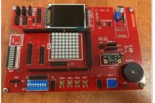

PROJECT MODULE 07
Arduino Portfolio and Project
Embedded electronics coursework and a group project using a range of inputs, outputs and storage devices.
Overall subject mark · 84 (HD)
Project overview
Worked on an Arduino portfolio and a group project involving embedded electronics and peripheral integration.
Project components
- EEPROM and SD cards.
- Push buttons and an LED matrix.
- SDI-12, potentiometer, LDR and microphone.
Outcome
Overall subject mark: 84 (High Distinction).
